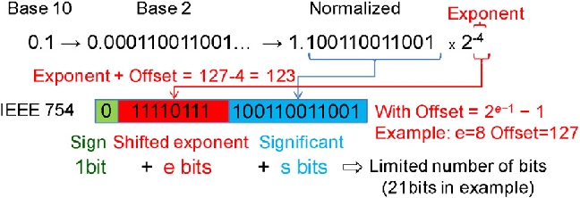
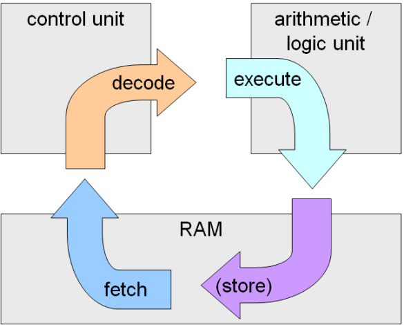

Parham
[dot]
Alvani
[at]
gmail
[dot]
com
No instant messaging
Email is awesome
This Course
- Introduction to Computer & Programming
How to use computers to solve our problems
- The problems are computational problems
This Course (cont’d)
- What we learn
- Overall overview of computer organization
- Problem solving steps
- Algorithm design
- A programming language: the C
This Course (cont’d)
- What we don’t learn
- In depth computer hardware/software details
- Computer Architecture
- Operating System
- Most advanced algorithms
- Data Structure
- Algorithms
- System programming using C
- Other programming languages: Java, PHP, etc.
- Advanced Programming
- Web Programming
This Course (cont'd)
Steps to learn a new language (English, French, … C, Java, Python, …)
- Present: what is the new language (course slide)
- Practice: how to use the new language in practice (the example)
- Produce: use the language to create a new things (Lab, HW)
This Course (cont'd)
Learning Programming Language
- is not a pure theoretical course (mathematics, …)
- Reading, reading, reading, ….
- is a practical course needs the product step
- Class, Reading, programming, programming, programming,…
This Course (cont'd)
Course Materials
- Lecture notes (slides) are in (simple) English
- Available in the course homepage:
https://aut-ce.github.io/C-lecture/
- Textbook:
The C Programming Language
Book by Brian Kernighan and Dennis Ritchie
Agenda
- Introduction
- Number Representation (SBU)
- Algorithm Design (AUT)
- Basic Concepts
- Calculations
- Interaction
- Decision
- Iteration
- Function
- Array
- Pointer
- Struct
- File
- Misc.
Grading (AUT)
Major Parts
| Midterm(s) |
25% |
| Final |
20% |
| Lab |
15% |
| Homework |
30% |
| Project |
10% |
Grading (SBU)
Major Parts
| Midterm(s) |
25% |
| Final |
25% |
| Quiz (?) |
15% |
| Homework |
30% |
| Project |
10% |
Extra Classes (AUT)
Lab + TA Classes
- Lab: A practical class
- TA: More details, Practical aspects, Solving HW
- Homework are not accepted after solutions
Extra Classes (SBU)
TA Classes
- TA: More details, Practical aspects, Solving HW
- Homework are not accepted after solutions
Computers: The Computing Machines
Computer Classififcation
- Supercomputers
- Weather forecast, Large scale simulation, …
- Mainframe computers
- The servers in large companies: Google, …
- Midsize computers
- The servers in CE department
- Micro computers (also called PC)
- Our laptop
- Pocket PCs
- Our mobile phones
Computers
- Computers are anywhere, anytime. Why?
- They can solve many different problems. How?
Computers
- Computers are programmable machines capable of performing calculations (computation)
- Changing program leads to different operation
- Special-purpose machines
- Calculators, game-playing machines, …
- General-purpose computers
- Personal computers, notebooks, …
Data Units
- Computers are digital machines
- Data processed or stored in computer is represented as two-state values
- either 1 or 0 - BInary digiTs (BIT)
- 1 Byte = 8 bits
- 1 kilobyte (KB) = 1024 bytes
- 1 megabyte (MB) = 1024 kilobyte
- 1 gigabyte (GB) = 1024 megabyte
Data Representation/Coding
- How to represent our data by 0-1?
- In other word, there are some 0 and 1 in the computer, what is the meaning?
- Coding (Representation Standards)
- Major (common) representations (coding)
- Integer numbers: 1, 1000, -123, 0, ...
- Floating point numbers: 1.1, 11.232, -12.23, ...
- Characters: 'A', 'ب', '@', ...
Integer Number Coding
- There are different representations
- One of the (simple) coding is sign-magnitude coding
- If we have n bit for coding integers
- The left bit (the MSB): sign
- n-1 bits: magnitude
| 4 | 0000 | 0100 |
| -4 | 1000 | 0100 |
| 0 | 0000 | 0000 |
| -0 | 1000 | 0000 |
Integer Number Coding
Two's Complement
Floating Point Number Coding (IEEE 754)
- Usually, this coding pattern:

- Two precisions:
- Single precision: exponent: 8 bit, fraction: 23 bit
- Double precision: exponent: 11 bit, fraction: 52 bit
Character Coding
- Common character encoding: ASCII
- 8 bits can represent 256 characters; but,
- There are so many characters (Farsi, Arabic, …)
- Solution: UTF (Variable length coding)
- 0xxxxxxx: 1 byte code
- 110xxxxx 10xxxxxx: 2 byte code
- …
Computer Organization
- Major Components
- Hardware
- Physical devices that are wired and performs basic operations
- Software
- Set of programs that run on the hardware
- Hardware
- CPU (Central Processing Unit)
- Main Memory
- Secondary Storage
- Input/output
Computer Organization

Computer Organization: CPU
- ALU (Arithmetic Logic Unit)
- Performs mathematic calculations
- Makes decision based on conditions
- Special Floating Point processors
- Set of working area: Registers
- Control Unit
- Controls system operation
- Operation and operands are required
- Which are provided by instructions in the main memory
Computer Organization: Main Memory
- Ordered sequence of cells (memory cells)
- Directly connected to CPU
- All programs must be in main memory before execution
- When power is turned off, Main memory is cleared
Computer Organization: Secondary Storage
- Provides permanent storage for information
- Examples of secondary storages:
- Hard Disks
- Floppy Disks
- Flash/Cool/USB Disks
- CD/DVD
- Tapes
Computer Organization: Input Devices
- Devices that feed data and programs into computers
- Examples:
- Keyboard
- Mouse
- Network Interface Card
- Joystick
- Microphone
Computer Organization: Output Devices
- Devices that computer uses to generate results/outputs
- Examples:
- Printer
- Monitor
- Speaker
- Network Interface Card
Computer Organization: Software
- What can do the Hardware?
- No useful operation, if there isn’t any software
- We should tell/plan/program it to do something
- Software
- Programs which are designed for a specific task
- Major Software types
- Operating System
- Libraries
- Applications
Computer HW & SW Organization
Computer Organization: OS
- OS
- Manages the hardware, HW is a shared resource
- Application programmers can easily use HW, Without knowing the HW details
- Common operating systems
- Windows XP/Vista/8/10, Linux, Unix, …
Computer Organization: Libraries
- The libraries provide the most common functionalities
- In mathematic programs
- sin(x), cos(x), matrix multiplication/inversion
- In graphical programs
- Draw a line/cycle, set color, new window
- In multimedia programs
- Open/close files, jump, …
Computer Organization: Applications
- An application program
- Users use them to do some specific things
- Without knowing the details of the computer
- Common application programs
- Word, Internet Explorer, FireFox, Messengers
- Common applications in mathematic:
- Matlab, Mathematica, Maple, GAMS, AIMMS
Programming Execution Phases
- Program is loaded from secondary storage to main memory by OS
- OS gives the control to the program
- Instructions run
- Required inputs are got from input device & saved in main memory & used by CPU
- Result is saved in main/secondary memory or sent to output devices
Programming Execution Phases

- Basic steps in running instructions
- Read instruction from main memory: fetch
- Decode the instruction
- Get required operands from main memory
- Run the instruction
- Save the result
Von Neumann architecture
- also known as the von Neumann model or Princeton architecture
- Keeping both program instructions and data in read-write, random-access memory (RAM).
How to be general purpose machine?
- Hardware is simple & general purpose
- Complex tasks (e.g. average, sort, …) are programmed by software
- Software is translated to the basic instructions
- This is the way that we program computers
Algorithm??!!!
- Hardware do the basic operations
- We want to solve a real problem by computers
- We need a solution that
- Specifies how the real (complex) problem should be solved step-by-step using the basic operations
- The solution is the “Algorithm” of the problem
Algorithms (cont’d)
- Common Sense (in computer science):
- The way to do some things
- An abstract way to solve a problem
- Formal Definition:
An algorithm is a finite list of well-defined
instructions for accomplishing some task that,
given an initial state, will proceed through a welldefined series of successive states, possibly
eventually terminating in an end-state
Algorithms: Examples
- Finding Common Divisor
- Finding 2 largest element in a set
- Finding shortest path in a graph
- Searching in a sorted array
- Sorting a set
- Combining 2 sorted set in a sorted set
- Solving an equation
- Compression algorithms
- Cryptography algorithms
- ...
Algorithms: Description
- Algorithms are the problem solving steps in our mind!!!
- How can we document it (don’t forget it)?
- How can we explain/teach it to others peoples?
- How can we explain it to computers?
- We need some methods to describe algorithms!
- Flow chart
- Pseudo-codes
- Codes/Programs
Algorithms: Description (cont’d)
Algorithms: Description (cont’d)
- Pseudo-codes:
- A sequence of English and mathematical statements
Algorithm: calculate 1 ^ 2 + 2 ^ 2 + ... + n ^ 2
Input: n
Output: sum
---
sum = 0
i = 1
Repeat the following three steps while i <= n:
sq = i * i
sum = sum + sq
i = i + 1
Algorithms: Description (cont’d)
- Flowcharts and Pseudo-code are for humans not for computer
- What can computer run?
- Instructions in main memory
- The instructions are in “011100001…” format
- To use computers
We should describe your algorithm in “01” format
Programming Language
- Programming languages are the tools to describe your algorithms for computers
- Software is developed by programming languages
- New languages which is understandable by computers
- Human languages are not used. Why?
- When algorithm is described with a programming language
- It cannot be run on computer directly if the languages is not 011001001
- There are some other programs that translate the programming language to “010…”
- The output “0101…” can run on computers
Programming Language: Machine Level
- Computer’s native language
- What is saved in the main memory
- The processor architecture specifies the format of 01s, machine depended
- Example
- Add two numbers: 00100111 1010 0101
- Completely incomprehensible to (most) people
Programming Language: Assembly
- Programming based on mnemonics
- There are one-to-one mapping between machine language and assembly mnemonics
Programming Language: High Level
- Easy for programming, English-like keywords
- There isn’t one-to-one relation between high level statements and machine level statements
- Example: C, C++, Pascal, Java, PHP, Python, Go, ...
Translation of High Level Languages
- Two types of translators
- Interpreter
- Checks and runs program lines one-by-one
- Easy, slow, and we need the interpreter
- Compiler
- Check all lines, creates executable output file
- Fast and Stand alone program
Compiler
- A set of computer programs do the Compilation
- Preprocessor: Prepare file for compiler
- Compiler: Create assembly code
- Assembler: Convert assembly code to binary code
- Linker: Collect all required binary files (from libraries) into a single loadable file
- Each language has its own compiler
Usually compiler do all above steps, you just compile the file and get a executable file
Solving Problems
- How to solve problems using computers
- Steps
- Analysis: Input, output
- Algorithm Design
- Coding
- Compile (Program)
- Execution (Test)
- Documentation
Solving Problems: Analysis
- Problem solving process consists of: Input Algorithm Output
- Determine what information is available as the input to your algorithm
- Determine what information is desired as the output from your algorithm
- What needs to be done on the input to produce the output? Algorithm
Solving Problems: Algorithm
- Determine a series of steps that transforms the input data into the output results
- Find all the special cases that the must be handled
- If necessary modify or redesign your series of steps so that all special cases are handled
- Verify your algorithm
Solving Problems: Coding
- Describe your algorithm by a programming language
- You must code exactly in the programming language syntax
- Compiler itself is a program it isn’t a human
- It is not intelligent
- It just does the steps of the compiling algorithm
- It does not understand what do you mean!!!
Solving Program: Execution
- Compiler generated the executable file
- Run the executable code
- First try to use simple
- Then try larger and complex inputs
Errors in Solving Problems
- Compile / Syntax error: Compiler does not recognize your code
- Link error: Linker cannot find the required libraries
- Runtime error: Program does not run correctly
- Example: Division by zero
- Logical Error: Program does not produce the expected result
- It is called bug
- No one (compiler, assembler) except debugger can help you
Errors in Solving Problems
- Why error?
- You do not understand and analysis the problem correctly
- You do not develop a right algorithm for the problem
- You have mistakes in your coding
Debugging
- The process of resolving the errors
- Example: A program to divide two numbers
- Compile/Syntax error
- Compiler tells where it is, check syntax
- Link error
- Compiler tells what it is, check syntax & libraries
- Run time error
- Try to find it, use debugger to run step-by-step, print debug messages
- Check syntax & semantic of the line
Debugging
- Logical error
- Try to find it, use debugger to run step-by-step, print debug messages
- Check syntax & semantic of program
- Revise the algorithm
Desired Features of Programs
- Integrity
- Correctly solve the problem
- Clarity
- Easy to read
- Simplicity
- Easy to understand
- Efficiency
- Speed and memory
- Modularity
- Break down of a large task
- Generality
- Tunable by input as much as possible
Summary
- Computer organization
- Algorithm & Program
- What is the difference between them
- How to solve a problem using computer
- Errors in problem solving
- What is the next: Design algorithm
Legends
Linus Torvalds